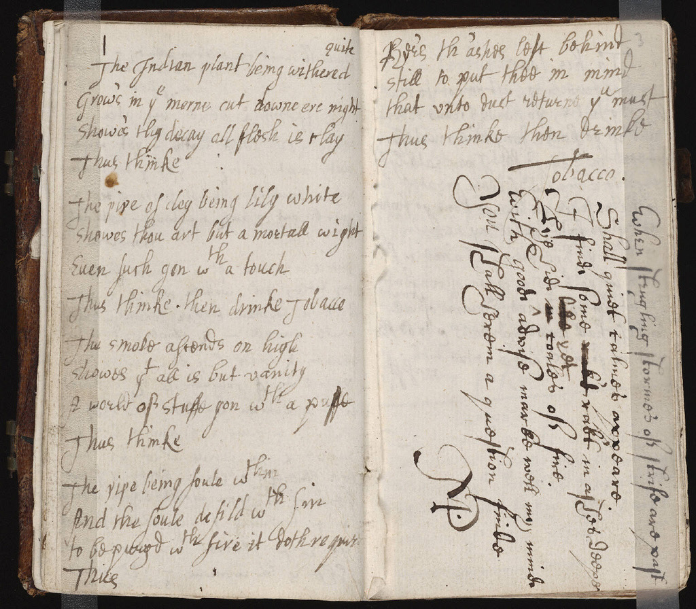
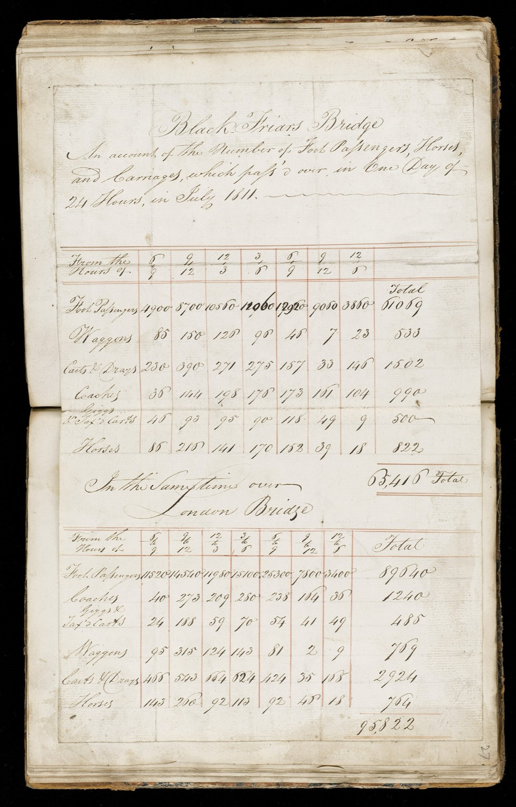

Escreva a ação como fala.
- [ ] pagar boleto ⏫ 📅 2026-10-23 (@2026-10-23 15:00) #action @ana
- Prazo
- sex., 23 de out.
- Lembrete
- sex., 23 de out., 15:00
- Dono
- @ana
- Prioridade
- alta
Da chamada à nota.
- Uma hora de reuniãoPrimeiro, o app pergunta se deve gravar e capta o microfone e o áudio do sistema, com pausa.
- Uns dez minutosDepois, transcreve e separa quem falou, sem internet.
- Um minutoEntão resume pelo seu Template.
- Na horaPor fim, as ações viram tarefas e o áudio é apagado.
Tudo o que cabe num arquivo de texto.
planejamento-q4.md
+ - [ ] Revisar onboarding #action @ana
+ - [ ] Testar com 5 pessoas #action
− Lançar em novembro.
+ Lançar o app web até o dia 31.- NotasEditor em blocos.md
- NotasPropriedades, links e tagsno cabeçalho
- NotasBusca rápida⌘K
- HistóricoDiff de cada alteraçãopor nota
- HistóricoConflitos lado a ladosem Git
- ReuniõesTranscrição e falanteslocais
- ReuniõesAgenda do Googlesó leitura
- ReuniõesTemplates de resumoseus
- AçõesLista única com dono e prazo#action
- AçõesLembretesno aparelho
- IABrain AI com citaçõessob pedido
- IAAgentes em paralelodesktop
Seus dados são seus.
O Brain Notes não tem banco de dados nem servidor guardando o que você escreve. Cada nota, resumo e ação é um arquivo no repositório que você escolheu, e a cópia local funciona offline.
Gravação, transcrição e resumo rodam no seu computador. Nada vai para um provedor de IA sem um pedido seu, e você pode abrir seus arquivos em qualquer editor, hoje ou daqui a dez anos.


Antes de comprar a licença
Como compro e quanto custa?
O Brain Notes é vendido por licença. Escreva para bruno.dias.donnici@gmail.com e você recebe o valor, a forma de pagamento e o instalador. Você tem 7 dias para desistir.
Em quais sistemas funciona?
No macOS com Apple Silicon hoje. Windows, Linux e um app web instalável, com notas e ações, estão a caminho.
Funciona sem internet?
Sim. O app trabalha numa cópia local do repositório; a sincronização acontece quando a conexão volta.
Onde ficam minhas notas?
No repositório Git que você escolhe ao entrar e na cópia do seu computador. Não temos acesso a elas.
A IA lê minhas notas?
Só quando você pede. A Brain AI usa o provedor que você conecta com a sua conta, e cada alteração numa nota existente pede sua permissão. Os resumos de reunião são locais por padrão.
E se eu parar de usar?
Seus arquivos continuam no seu repositório, em Markdown puro, legíveis por qualquer editor de texto.
Pense em texto puro.
Uma licença, seus arquivos para sempre. Escreva e receba o instalador.
Solicitar licença